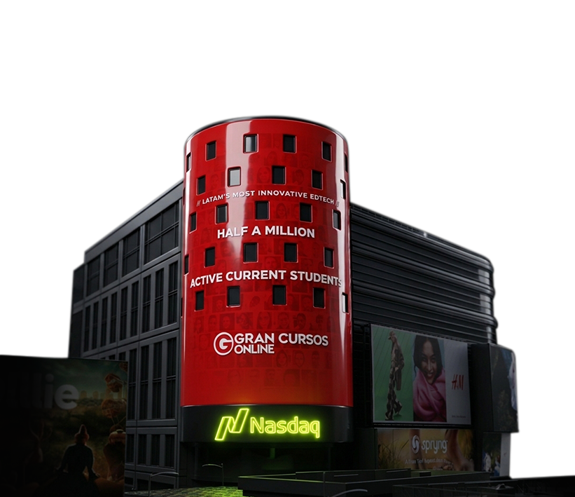

GRAN
Em 2022, tive a oportunidade de desenvolver o storytelling e as artes da animação criada para celebrar a marca de 500 mil alunos ativos pagantes do GRAN.
Embora fosse um projeto de escopo relativamente simples, ele teve um significado muito especial para mim. Recebi a confiança para transformar uma conquista importante da empresa em uma comunicação visual que traduzisse esse momento de forma clara, celebrativa e impactante.
O projeto ganhou uma dimensão ainda maior ao ser exibido no painel publicitário mais famoso do mundo, na Times Square, em Nova York. Ver uma peça que eu ajudei a conceber ocupando um dos espaços mais emblemáticos da publicidade global foi uma experiência marcante na minha trajetória profissional.
Mais do que um projeto de animação, esse trabalho representa para mim a confiança depositada no meu olhar como designer e a oportunidade de transformar um marco do negócio em uma experiência de comunicação que ultrapassou fronteiras.
Foi uma honra fazer parte desse momento.
